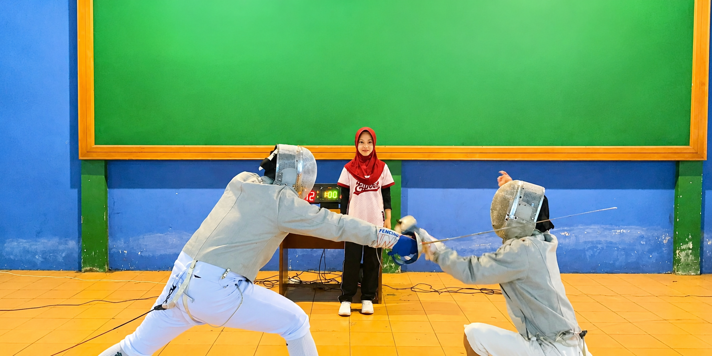
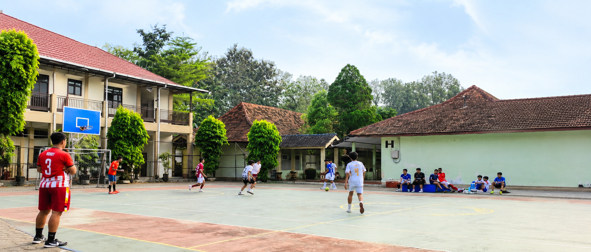
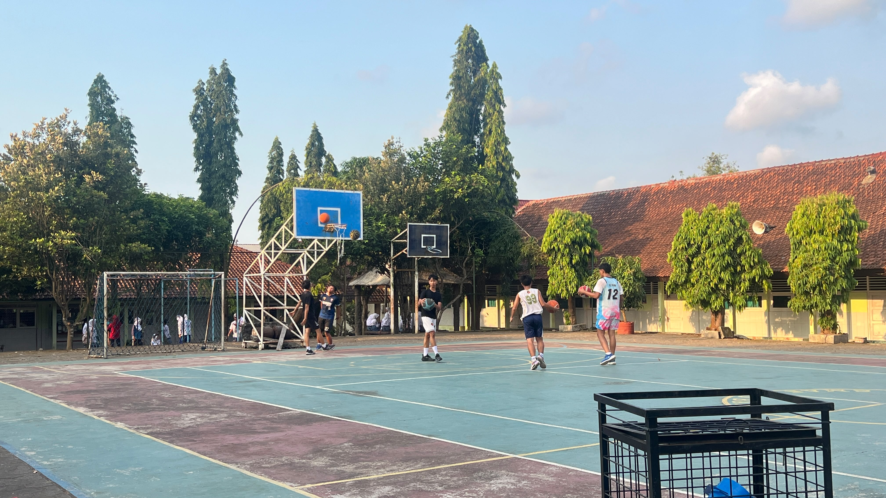

Informasi kurikulum, kalender, program unggulan, dan jadwal kegiatan belajar.
SMA Negeri 1 Subah menerapkan Kurikulum Merdeka yang didukung dengan penguatan pilar Sekolah Digital dan Penumbuhan Jiwa Kewirausahaan (Entrepreneurship). Kurikulum ini dirancang untuk memberikan keleluasaan bagi murid dalam mengembangkan potensi, minat, dan bakat secara fleksibel, inovatif, serta berbasis teknologi.
Jadwal agenda penting kegiatan pembelajaran selama tahun ajaran berjalan:

salah satu pilihan kegiatan seni bela diri sekaligus cabang olahraga prestasi yang unik

Kegiatan olahraga tim untuk membangun kebugaran, strategi permainan, sportivitas, dan kerja sama.

salah satu program pembinaan minat bakat olahraga tim yang sangat populer dan aktif diikuti oleh para siswa.
Kegiatan Belajar Mengajar (KBM) berlangsung dari hari Senin sampai Jumat dengan ketentuan waktu sebagai berikut: